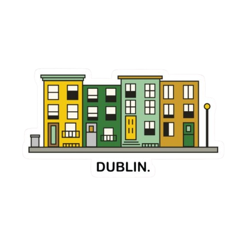

The River Liffey is a prominent river that flows through the heart of Dublin, Ireland, stretching about 125 kilometers from the Wicklow Mountains to Dublin Bay. It has played a central role in the city's history, serving as a route for trade and transport for centuries. The river is spanned by numerous iconic bridges, including the Ha'penny Bridge and the Samuel Beckett Bridge, which add to Dublin's unique character. Today, the Liffey is not only a vital waterway but also a scenic landmark, with riverside walks, quays, and cultural sites that make it an integral part of Dublin's identity.The heart of the city, dividing the north and south sides.

Temple Bar is a vibrant cultural and entertainment quarter located on the south bank of the River Liffey in Dublin, Ireland. Known for its cobbled streets, colorful buildings, and lively nightlife, it is a hub for pubs, restaurants, galleries, and street performances. Temple Bar is also home to cultural institutions such as the Irish Film Institute and the Gallery of Photography, making it a center for arts and creativity. While it is a popular tourist destination, it retains a unique charm with its historic architecture and bustling atmosphere, reflecting Dublin's lively social and cultural spirit.
Dublin Castle is a historic landmark located in the heart of Dublin, Ireland. Originally built in the early 13th century on a site once settled by the Vikings, it served as a defensive fortress and later became the seat of British administration in Ireland for centuries. Today, Dublin Castle is a major cultural and tourist attraction, housing government offices, ceremonial halls, and museums. Visitors can explore its grand State Apartments, medieval undercroft, and beautiful gardens, making it a place where Ireland's rich history and heritage are vividly on display.
Grafton Street is one of Dublin's most famous shopping streets, known for its lively atmosphere, street performers, and mix of high-end shops and cafés. It connects St. Stephen's Green to College Green and is a popular spot for both locals and tourists to shop, stroll, and enjoy Dublin's city life.
O'Connell Street is the main and most famous thoroughfare in Dublin, Ireland, stretching from O'Connell Bridge on the River Liffey to Parnell Square. It is one of the widest streets in Europe and serves as a central hub for shopping, celebrations, and public events. The street is lined with shops, restaurants, and historic monuments that reflect Dublin's rich heritage. Among its most notable landmarks are the General Post Office (GPO), the headquarters of the 1916 Easter Rising, and the Spire of Dublin, a striking modern monument that symbolizes the city's blend of history and progress. Bustling with activity day and night, O'Connell Street stands as the heart of Dublin's social and cultural life.
St. Stephen’s Green is a beautiful public park located in the center of Dublin, Ireland. Covering 22 acres, it offers a peaceful escape from the busy city streets, with lush lawns, colorful flowerbeds, and scenic walking paths. The park is rich in history, dating back to the 17th century, and features monuments dedicated to important Irish figures and events. A lake with ducks and swans, along with charming bridges and fountains, adds to its natural beauty. Surrounded by elegant Georgian buildings and close to Grafton Street, St. Stephen’s Green is one of Dublin’s most beloved and picturesque landmarks